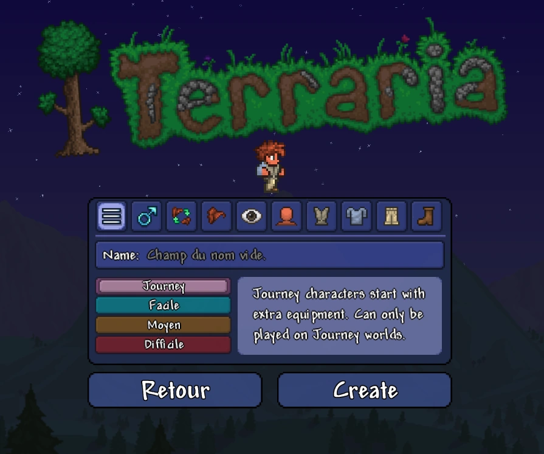

Débuter une partie

Création du personnage
- Apparence : cheveux, yeux, peau, vêtements. Optionnelle, mais amusante.
- Classe recommandée :
- Mêlée : privilégie les épées et haches, armures solides, bonne résistance.
- Distance : arcs, fusils, arbalètes, très mobile.
- Magie : bâtons et livres, nécessite du mana mais fait de gros dégâts.
- Invocation (Summoner) : invoque des sbires qui attaquent automatiquement, moins de combat direct.
Remarque : Le jeu ne va pas directement vous proposer les classes, c'est à vous de la choisir au cours de l'aventure
Conseil : commencez en Classique pour apprendre les bases sans trop de pression.
Création du monde
- Taille : Petit, Moyen, Grand. Plus le monde est grand, plus il y a de biomes et de trésors, mais l'exploration est plus longue.
- Choix Corruption ou Carmin :
- Corruption : ennemis plus faciles à reconnaître, biome sombre.
- Carmin : ennemis différents, plus agressifs parfois.
- La taille et le biome choisi influencent la progression ainsi que l'emplacement des structures importantes (Océan, Donjon, Temple de Jungle, Underworld).
Premières actions
- Ramassez du bois et des pierres pour fabriquer vos premiers outils.
- Vous apparaissez déjà avec une pioche, une hache et une épée donc je vous conseille de construire un établie avec le bois que vous avez récolté.
- Explorez la surface pour collecter :
- Plantes pour potions
- Coffres avec objets de départ
- Ressources comme cactus, pierres et minéraux de surface
Conseil :
- Si vous trouvez un désert prenez du cactus à l'aide de votre hache afin de créer une armure et de meilleurs outils
- Si vous trouvez des citrouilles c'est encore mieux
- Évitez d'explorer trop loin la nuit, les ennemis deviennent agressifs dès le coucher du soleil.
Construire votre première maison
Pour faire apparaître vos premiers PNJ et vous protéger vous aurez besoin d'une maison.
Pour construire une bonne maison pour un début de partie, il vous faut:
- Taille minimale : 3 blocs de haut, 5 de large
- Murs obligatoires pour l'intérieur
- Porte et source de lumière (torche ou lanterne)
- Meubles pour PNJ : chaise + table
- Premier PNJ à installer : Guide ou Marchand
Astuce : même une maison simple suffit pour les premières nuits, vous pourrez construire des quartiers plus grands après.
Pause / Sécurité contre les spoilers:
Maintenant que votre personnage est créé, le monde généré et votre première maison construite, êtes-vous prêt à passer à la partie suivante : exploration et progression pré-Hardmode ?
passer àla suite